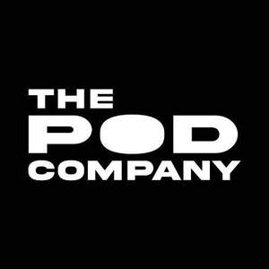

Trade Mark Journal No.2025/027 4 July 2025
UK00004201139 9 May 2025 (11,35)
Mark 1
THE POD COMPANY
Mark 2

- Class 11
- Ice Baths; Portable ice baths; Portable saunas; Water cooling apparatus, appliances and installations; Water supply and sanitation equipment; Baths; Hydrotherapy baths; Ice bath linings; Outdoor showers for bathing; Electric ice bath-water purifying apparatus for household purposes; Portable steam baths, saunas and spas; Refrigerated, heatless and membrane air dryers, heat exchangers [not parts of machines] namely, air cooled aftercoolers, water cooled aftercoolers; Heat exchangers for household purposes [not parts of machines], namely, air cooled aftercoolers, water cooled aftercoolers; Freezing machines and apparatus for household purposes; Filters for water filtering apparatus; Water filters; Devices and systems for purifying water comprised of water filters; Water treatment filters; Water coolers; Heat exchangers, cooling installations cooling apparatus and cooling equipment; Chilling container; Ice boxes; Ice chests; Ice baths for immersion of humans for physical recovery purposes; Cold water baths; Heating and cooling apparatus and installations; Portable cryotherapy spas; Portable sports recovery spas; Recovery baths (sports or exercise); Portable hydrotherapy baths; Hot tubs; Sauna bath installations; Hydromassage bath apparatus; Microbubble generators for baths; Personal steambaths; Sauna apparatus; Sauna heaters; Saunas; Spa baths [vessels]; Spas [heated pools]; Steam baths; Steam baths, saunas and spas; Thermal baths; Portable outdoor showers; Showers; Immersion pools; Cooling baths with cryo-technology; Cryogenic apparatus.
- Class 35
- Physical store retail services in relation to portable ice baths, showers and saunas and equipment related thereto; Sales promotion services; Wholesale ordering services in relation to portable ice baths, showers and saunas; Online store retail services in relation to portable ice baths, saunas, showers and equipment related thereto; Online and physical store retail services in relation to ice baths and cold water therapy products; Retail store services in connection to the sale athletic recovery products, namely portable baths and saunas, cold immersion tubs, inflatable tubs, rigid tubs, cold immersion chillers, and contrast therapy tubs; Wholesale store services in connection to the sale of athletic recovery products, namely portable baths and saunas, cold immersion tubs, inflatable tubs, rigid tubs, cold immersion chillers, and contrast therapy tubs.
BJORN CAPITAL GROUP LLC
Representative: Trademark Brothers Ltd